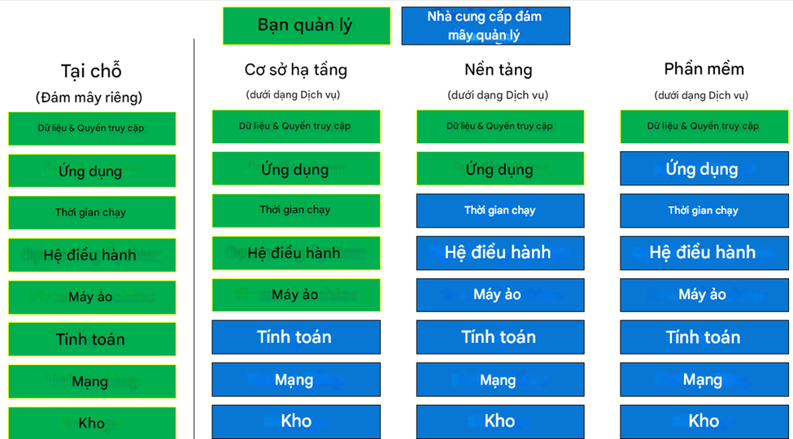
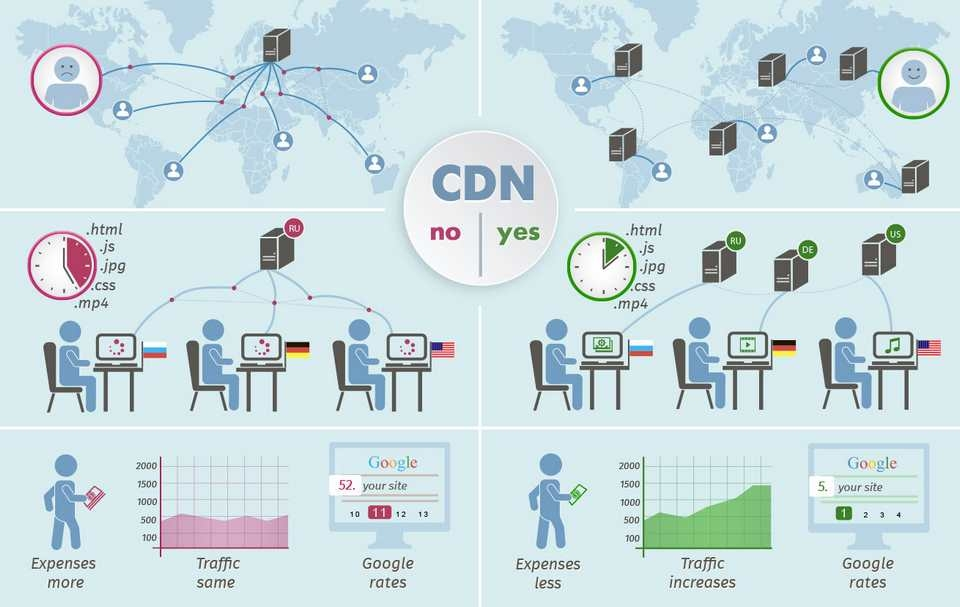
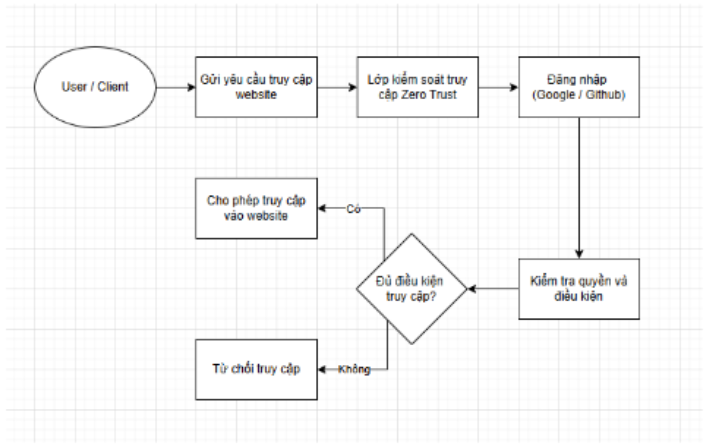

1. Trả lời một số câu hỏi cơ bản
❓ Cloud Computing là gì?
Cloud Computing là việc cung cấp các dịch vụ điện toán như máy chủ, lưu trữ, cơ sở dữ liệu, mạng, phần mềm và trí tuệ nhân tạo thông qua Internet (“đám mây”), giúp tăng tính linh hoạt, khả năng mở rộng và giảm chi phí đầu tư hạ tầng.
❓ Phân biệt IaaS – PaaS – SaaS
| Đặc điểm | IaaS | PaaS | SaaS |
|---|---|---|---|
| Định nghĩa | Thuê cơ sở hạ tầng CNTT | Cung cấp nền tảng phát triển | Cung cấp phần mềm hoàn chỉnh |
| Bạn quản lý | Hệ điều hành, dữ liệu, ứng dụng | Dữ liệu và ứng dụng | Dữ liệu và quyền truy cập |
| Ví dụ | Amazon EC2, DigitalOcean | Cloudflare Pages, Heroku | Gmail, Dropbox, Office 365 |

❓ Website tĩnh thuộc mô hình nào?
Website tĩnh khi triển khai trên Cloudflare Pages, Netlify hoặc Vercel thường thuộc mô hình PaaS (Platform as a Service).
Lý do: Người dùng chỉ cần cung cấp mã nguồn, nhà cung cấp sẽ đảm nhiệm hạ tầng, bảo mật, cấu hình mạng và mở rộng quy mô.
Cloudflare Pages & CDN
❓ Cloudflare Pages hoạt động theo cơ chế gì?
- Kết nối Git: Liên kết với GitHub/GitLab
- Build: Tự động build khi có thay đổi
- Deploy to Edge: Phân phối toàn cầu qua Edge Network
❓ CDN phân phối nội dung ra sao?
- Origin Server: Chứa dữ liệu gốc
- Caching: Lưu bản sao tại máy chủ biên (PoP)
- Delivery: Người dùng tải từ vị trí gần nhất
❓ Vai trò của CDN đối với hiệu năng & an toàn
🚀 Hiệu năng:
- Giảm độ trễ (Latency)
- Giảm tải máy chủ gốc
- Cải thiện tốc độ tải trang & SEO
🛡️ An toàn:
- Ẩn IP máy chủ gốc
- Chống DDoS
- WAF chặn truy cập độc hại

Các rủi ro bảo mật & giải pháp
| Rủi ro | Giải thích | Giải pháp |
|---|---|---|
| Lộ IP gốc | Tấn công bypass CDN | Whitelist IP Cloudflare |
| Cấu hình sai | Quyền truy cập quá rộng | Least Privilege, CSPM |
| Supply Chain | Mã độc từ thư viện | SAST / SCA |
| DDoS tầng ứng dụng | Làm cạn tài nguyên | Rate Limiting, WAF |
2.1 Kiến thức cơ bản về Quản lý danh tính và Truy cập
| Khái niệm | Câu hỏi cốt lõi | Đặc điểm & Phương thức |
|---|---|---|
| Authentication (Xác thực) | Who are you? | Xác minh danh tính qua: Mật khẩu, mã OTP, sinh trắc học (vân tay, khuôn mặt), hoặc xác thực đa yếu tố (MFA). |
| Authorization (Phân quyền) | What are you allowed to do? | Xác định đặc quyền sau khi đã xác thực. Ví dụ: Người dùng chỉ xem tài liệu, Admin được phép xóa/sửa. |
Vai trò của IAM và Zero Trust trong Cloud
| Tính năng IAM | Lợi ích trong môi trường Cloud |
|---|---|
| Quản lý tập trung | Kiểm soát hàng nghìn định danh và dịch vụ từ một nơi duy nhất. |
| Quyền tối thiểu | Thực thi Least Privilege, chỉ cấp quyền vừa đủ cho công việc. |
| Tuân thủ & Bảo mật | Ngăn chặn rò rỉ dữ liệu và cung cấp log phục vụ kiểm toán (Compliance). |
| Làm việc từ xa | Truy cập an toàn vào ứng dụng Cloud từ bất cứ đâu. |
🛡️ Triết lý Zero Trust
Nguyên tắc cốt lõi: "Không bao giờ tin tưởng, luôn luôn xác minh" (Never trust, always verify).
- Xác thực liên tục: Không chỉ kiểm tra một lần lúc đăng nhập.
- Phân đoạn siêu nhỏ (Microsegmentation): Ngăn chặn di chuyển ngang của tin tặc.
- Kiểm soát thiết bị: Chỉ cho phép thiết bị an toàn truy cập vào tài nguyên.
2.2 Thiết kế mô hình và Triển khai cấu hình Cloudflare Access

Quy trình triển khai xác thực qua Github
| Bước | Hành động thực hiện | Chi tiết cấu hình |
|---|---|---|
| 1 | Khởi tạo Application | Chọn Add an application -> Self-hosted. |
| 2 | Thiết lập chính sách | Cài đặt địa chỉ URL website và thời gian duy trì phiên đăng nhập. |
| 3 | Phân quyền người dùng | Xác định nhóm email hoặc tài khoản cụ thể được phép truy cập. |
| 4 | Cấu hình Identity Provider | Liên kết Github với Cloudflare qua Client ID và Client Secret. |
2.3 Phân tích an toàn và Rủi ro truy cập
| Trường hợp | Rủi ro chính | Mức độ ảnh hưởng |
|---|---|---|
| Website Public hoàn toàn | Rò rỉ dữ liệu nhạy cảm; Bị Bot quét dữ liệu (Scraping); Phá hoại nội dung (Defacement). | Rất cao |
| Sử dụng IAM cơ bản | Đánh cắp tài khoản (Phishing); Lạm dụng quyền hạn nội bộ; Sai sót cấu hình thừa quyền. | Trung bình |
| IAM không có Zero Trust | Di chuyển ngang (Lateral Movement); Thiết bị nhiễm mã độc truy cập mạng; Chiếm hữu phiên (Session Hijacking). | Thấp (Cần tối ưu) |
2.4 So sánh Mô hình Truyền thống vs Zero Trust
| Đặc điểm | Mô hình truyền thống (Perimeter-based) | Mô hình Zero Trust (Identity-based) |
|---|---|---|
| Triết lý | "Tin tưởng nhưng có kiểm tra" tại cửa ngõ. | "Không bao giờ tin tưởng, luôn luôn xác minh". |
| Vùng tin cậy | Phân biệt rõ Nội bộ (An toàn) - Bên ngoài (Nguy hiểm). | Không có vùng tin cậy, mọi yêu cầu đều bị kiểm tra. |
| Xác thực | Xác thực một lần (VPN/Firewall). | Xác thực liên tục và MFA cho mọi tài nguyên. |
| Phạm vi ảnh hưởng | Rộng (Kẻ tấn công có thể đi lại tự do trong mạng). | Hẹp (Bị cô lập nhờ Microsegmentation). |
3 Các rủi ro bảo mật & giải pháp (OWASP Top 10)
| Rủi ro (OWASP) | Giải thích / Cách khai thác | Giải pháp khắc phục |
|---|---|---|
| A03:2021-Injection (SQLi) | Sử dụng payload ' or 1=1-- tại form đăng nhập để vượt qua xác thực mà không cần mật khẩu. |
Sử dụng Parameterized Queries (Prepared Statements) thay vì cộng chuỗi SQL trong code backend. |
| A03:2021-Injection (XSS) | Chèn mã <script>alert('XSS')</script> vào ô tìm kiếm, mã độc thực thi trên trình duyệt người dùng. |
Sử dụng [textContent] để render dữ liệu; thực hiện Input Validation và Output Encoding. |
| A01:2021-Broken Access Control | Truy cập trái phép vào /administration hoặc /score-board bằng cách đoán URL (Insecure Direct Object Reference). |
Kiểm tra quyền Authorization ở server-side; sử dụng RBAC (Role-based Access Control). |
| A05:2021-Security Misconfiguration | Lộ phiên bản Server, hệ điều hành qua Logs hoặc thiếu các Header bảo mật như CSP, HSTS. | Cấu hình HTTP Security Headers (Helmet); tắt chế độ Debug; thay đổi thông tin mặc định. |
| Lộ IP gốc (Origin IP) | Kẻ tấn công tìm thấy IP thật của server để bypass qua tường lửa (WAF/Cloudflare). | Whitelist IP của Cloudflare; chặn toàn bộ truy cập từ các IP khác trực tiếp vào Server. |
| DDoS tầng ứng dụng | Gửi hàng loạt yêu cầu tìm kiếm nặng để làm cạn kiệt CPU/RAM của server Juice Shop. | Cấu hình Rate Limiting (giới hạn số request/giây) và sử dụng dịch vụ chống DDoS (WAF). |
| Supply Chain Vulnerabilities | Sử dụng các thư viện NPM cũ (node_modules) chứa lỗ hổng bảo mật đã biết. | Thực hiện quét npm audit thường xuyên; sử dụng công cụ SCA (Software Composition Analysis). |
Kết quả sau khi khắc phục (Fixing Results)
- ✅ SQL Injection: Đã chuyển đổi sang truy vấn tham số hóa, payload tấn công bị coi là chuỗi văn bản thuần.
- ✅ XSS: Dữ liệu từ người dùng được mã hóa trước khi hiển thị, không còn thực thi được mã script.
- ✅ Sensitive Data: Đã triển khai Content-Security-Policy (CSP) giúp chặn các script lạ từ bên ngoài.
4. Đối tượng giám sát & Phân tích hành vi (Monitoring vs Logging)
| Đối tượng/Tình huống | Giải thích & Phân tích | Giải pháp/Công cụ phù hợp |
|---|---|---|
| Đăng nhập/Đăng xuất | Kiểm soát quyền truy cập và xác thực. Tránh tấn công Brute-force hoặc chiếm tài khoản. | Logging (Ghi lại IP, User, Timestamp) |
| Lưu lượng truy cập | Theo dõi số lượng request tăng cao bất thường để phát hiện dấu hiệu tấn công DDoS. | Monitoring (Biểu đồ số lượng Request/s) |
| Phiên đăng nhập (Session) | Quản lý tài nguyên bộ nhớ và ngăn chặn Session Hijacking. | Monitoring (Theo dõi số Active Sessions) |
| Phát hiện Brute-force | Số lần đăng nhập thất bại tăng đột biến trong thời gian ngắn. | Monitoring: Cảnh báo (Alert) khi vượt ngưỡng |
| Điều tra sự cố (Forensics) | Xác định danh tính kẻ tấn công, địa chỉ IP và các hành động cụ thể đã thực hiện. | Logging: Phân tích nhật ký sự kiện chi tiết |
| Xác định nguyên nhân lỗi | Phân tích stack trace hoặc thông báo lỗi hệ thống (ví dụ: Lỗi 500) để sửa code. | Logging: Xem chi tiết nội dung lỗi |
| Lộ lọt thông tin nhạy cảm | Log ghi quá chi tiết mật khẩu hoặc token người dùng không qua mã hóa. | Bảo vệ Log (Mã hóa & Phân quyền) |
| Hậu quả phát hiện muộn | Kẻ tấn công có đủ thời gian di chuyển ngang (Lateral movement) và lấy dữ liệu. | Real-time Monitoring + WAF |
Tóm tắt vai trò trong Incident Response
| Công cụ | Vai trò chính | Câu hỏi trả lời |
|---|---|---|
| Monitoring | Hệ thống báo động (Phát hiện sớm) | Hệ thống có đang ổn định không? |
| Logging | Camera an ninh (Điều tra chi tiết) | Chuyện gì đã xảy ra và tại sao? |
5.1 Kiến thức cơ bản về Ứng phó sự cố (Incident Response)
| Khái niệm | Nội dung chi tiết | Mục tiêu & Đặc thù Cloud |
|---|---|---|
| Incident Response (IR) | Quy trình tổ chức để quản lý và giải quyết các hậu quả của cuộc tấn công mạng hoặc vi phạm an ninh. | Giảm thiểu thiệt hại, phục hồi hệ thống nhanh nhất và ngăn chặn tái diễn. |
5.2 Vòng đời ứng phó sự cố (NIST SP 800-61)
| Giai đoạn | Hành động thực tế | Công cụ hỗ trợ |
|---|---|---|
| 1. Preparation (Chuẩn bị) | Thiết lập chính sách, kịch bản ứng phó (Playbooks) và đào tạo nhân sự. | SIEM, IDS/IPS, Chính sách IAM |
| 2. Detection & Analysis | Giám sát Log, xác định sự cố có thực hay không và mức độ nghiêm trọng. | Monitoring (Metrics), Dashboard báo động |
| 3. Containment & Recovery | Cô lập máy chủ bị nhiễm, vá lỗ hổng và khôi phục từ dữ liệu Backup. | Snapshot, Firewall Rule, Infrastructure as Code |
| 4. Post-Incident Activity | Viết báo cáo, rút ra bài học kinh nghiệm (Lessons Learned) để cập nhật quy trình. | Báo cáo tổng hợp, Log điều tra |
5.3 Phân tích sự cố và Vai trò của Giám sát
| Dấu hiệu nhận biết | Phân loại sự cố | Nguyên nhân gốc rễ (Root Cause) |
|---|---|---|
| Tài nguyên (CPU/RAM) tăng đột biến. | Tấn công từ chối dịch vụ (DoS) | Bị botnet khai thác làm cạn kiệt tài nguyên hệ thống. |
| Log ghi nhận hàng ngàn lần đăng nhập lỗi. | Tấn công Brute-force | Lỗ hổng Access Control, mật khẩu yếu hoặc thiếu MFA. |
| Xuất hiện IP lạ từ các vùng địa lý bất thường. | Chiếm đoạt tài khoản (Account Hijacking) | Lộ thông tin định danh (Credentials) hoặc Session Token. |
| Payload SQLi/XSS xuất hiện trong Log. | Khai thác lỗ hổng ứng dụng | Vi phạm tiêu chuẩn OWASP Top 10 (Injection). |
Tầm quan trọng của Monitoring & Logging
Nếu không có hai yếu tố này, sự cố KHÔNG THỂ được phát hiện sớm vì:
- Hệ thống đóng vai trò như "Hộp đen": Không có dữ liệu lịch sử để đối soát.
- Quản trị viên chỉ biết khi "Nhà đã cháy": Website sập hoàn toàn hoặc dữ liệu đã bị công khai.
- Mất khả năng điều tra: Không thể truy vết kẻ tấn công đến từ đâu và đã lấy đi những gì.
5.4 Mô hình trách nhiệm chia sẻ (Shared Responsibility) trong IR
| Bên chịu trách nhiệm | Phạm vi xử lý sự cố |
|---|---|
| Nhà cung cấp Cloud (CSP) | Bảo mật hạ tầng vật lý, mạng lõi, và các dịch vụ dùng chung (Managed Services). |
| Người vận hành (Customer) | Bảo mật mã nguồn ứng dụng, quản lý tài khoản, cấu hình Log và dữ liệu khách hàng. |
6. Tổng kết quá trình thực hiện chuỗi Lab Bảo mật
| Giai đoạn | Kết quả thực hiện | Bài học kinh nghiệm & Tư duy bảo mật |
|---|---|---|
| Lab 1: Kiến trúc Cloud & CDN | Triển khai thành công JAMstack và tối ưu hóa phân phối qua Edge Network. | Hiểu rõ Shared Responsibility Model. CDN không chỉ tăng tốc độ mà còn là lớp lá chắn IP gốc trước các cuộc tấn công trực diện. |
| Lab 2: IAM & Zero Trust | Cấu hình Cloudflare Access và chính sách truy cập dựa trên định danh (GitHub). | Thay đổi tư duy từ bảo mật vành đai sang Zero Trust: "Không bao giờ tin tưởng, luôn luôn xác minh" mọi yêu cầu truy cập. |
| Lab 3: Lỗ hổng OWASP | Khai thác và thực hiện vá lỗi SQL Injection, XSS trên thực tế. | Tư duy "Never Trust User Input". Việc kiểm soát dữ liệu đầu vào và mã hóa đầu ra là bắt buộc để bảo vệ tính toàn vẹn của ứng dụng. |
| Lab 4: Monitoring & Logging | Xác định đối tượng giám sát và phân tích các chỉ dấu (Indicators) bất thường. | Security Visibility là "đôi mắt" của hệ thống. Thiếu giám sát, quản trị viên sẽ hoàn toàn mù quáng trước các cuộc tấn công ngầm. |
| Lab 5: Incident Response | Xây dựng kịch bản ứng phó sự cố theo tiêu chuẩn NIST và phân tích Root Cause. | [Image of NIST Incident Response Lifecycle] Bảo mật là một chu kỳ cải tiến liên tục. Sau mỗi sự cố, việc rút kinh nghiệm giúp hệ thống trở nên kiên cố hơn. |
Kết luận chung
- Chủ động phòng thủ: Chuyển từ trạng thái chờ đợi sự cố sang việc xây dựng hệ thống tự bảo vệ đa lớp (Defense in Depth).
- Tuân thủ tiêu chuẩn: Áp dụng hiệu quả các khung bảo mật quốc tế như OWASP Top 10 và NIST vào vận hành thực tế.
- Tầm nhìn dài hạn: Bảo mật Cloud không phải là đích đến mà là một hành trình giám sát, đánh giá và cập nhật chính sách không ngừng.
Thông tin thành viên nhóm
Dương Hoàng Quốc Thái
MSSV: 22004252
Nguyễn Hiếu Đạt
MSSV: 22004256
Trương Hoàng Anh
MSSV: 22004259